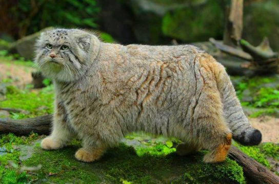
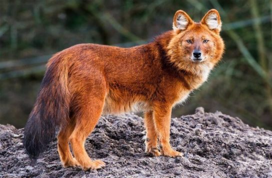

◄ На главную
Животные Красной книги Бурятии
Млекопитающие
Снежный барс (Ирбис)

Снежный барс или ирбис – один из самых прекрасных представителей хищников, который естественной средой своего обитания выбрал именно горы. Повадки, окрас – все в данном звере прекрасно, что, собственно и сыграло злую шутку. Человечество в целях промысла и выгоды, в свое время практически полностью истребило данное животное. На данный момент снежный барс внесен в Красную Книгу и находится под строгой охраной.
Манул

Палласов кот или манул (лат. Otocolobus manul) – один из самых загадочных и непредсказуемых животных хищного мира. Известно только то, что слово «манул» имеет тюркское происхождение, но точного значения никто не знает, собственно как и то, почему его так назвали.
Красный горный волк

Красный горный волк (лат. Cuon alpinus) – хищник семейства псовых, также известен как буанзу или гималайский волк. Собственно такое название это животное имеет не зря – окрас его шерсти насыщенного рыжего цвета, ближе к красному. Следует отметить, что эта порода сочетает в себя несколько видов – по строению тела похоже на шакала, окрас на лисицу, а вот что касается поведения, то здесь все от смелого и грозного волка. К сожалению, если ситуация в ближайшее время не измениться, красного горного волка можно будет видеть только на фото, так как его численность стремительно сходит на нет. И все из-за негативного влияния человека – из-за красивой шерсти происходит отстрел животного.
Сибирский горный козел

Сибирский горный козел (лат. Capra sibirica) также имеет еще одно название – центральноазиатский каменный козел. Это самый большой вид парнокопытных. От других козлов его отличает мощное тело, грация и изящество. Острые рога в сочетании с крупным туловищем придают ему грозный и опасный вид. Однако в действительности горный козел довольно труслив.
Северный олень

Северный олень (лат. Rangifer tarandus) – млекопитающее семейства оленей или Cervidae (лат.), которые включают оленей, лосей и вапити. Как и у других, в их семье у северных оленей длинные ноги, копыта и рога. Обнаружены популяции в арктической тундре и прилегающих бореальных лесах Гренландии, Скандинавии, России, Аляски и Канады. Существуют две разновидности или экотипы: олени тундры и лесные олени. Тундровые олени мигрируют между тундрой и лесом огромными стадами, насчитывающими до полумиллиона особей в годовом цикле, охватывающих площадь до 5000 км. Лесной олень гораздо меньше.
Речная выдра (порешня, обыкновенная выдра)
Выдра — это маленькое хищное животное, которому присущ половодный тип жизни. Относится она к семейству куньих. Довольно примечательное животное, которое получило повышенные интерес за счет своего меха. Считается крайне добродушным зверьком, которого можно приручить к домашним условиям.